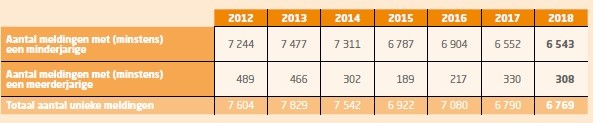
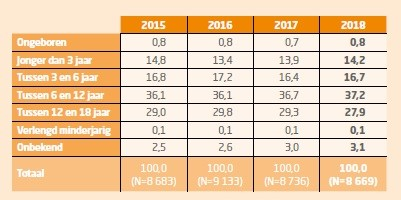
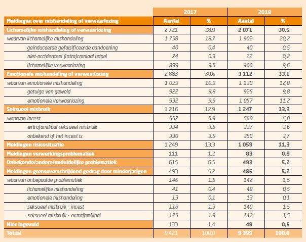

Sociaal werk doet zich overal ter wereld voor. Een sociaal werker is een wereldburger, en dat ben je zowel thuis als in het buitenland. Omdat effectief naar het buitenland gaan niet altijd mogelijk is organiseert Thomas More elk jaar de ‘international days’, waarbij gasten uit verschillende landen van binnen en buiten Europa lessen en workshops komen geven in alle opleidingen. Jammer genoeg kon de 2020 editie niet doorgaan vanwege de hoge gezondheidsrisico’s van het Coronavirus. Om buitenlands sociaal werk toch in the picture te zetten, wil ik jullie meer over de volgende documentaire : the trials of Gabriel Fernandez, te kijken op Netflix. Hier vindt je alvast de trailer.
In 2013 stierf de achtjarige Gabriel Fernandez aan de gevolgen van langdurige mishandeling door zijn moeder en haar vriend. Hij werd thuis zwaargewond aangetroffen en overleed twee dagen later in het ziekenhuis. Fernandez bleek geen onbekende in het systeem: een hele waaier aan professionals en non-professionals , van maatschappelijk werkers tot collega’s, hadden in eerdere maanden al aan de bel getrokken. De lokale sheriff was bijna kind aan huis, maar toch gingen de mishandelingen door. Het nieuws van Fernandez’ dood sloeg vervolgens in als een bom want waarom greep niemand in? En nog belangrijker: wie was verantwoordelijk?
Filmmaker Brian Knappenberger probeert in zes afleveringen antwoord te geven op deze vragen. Om tot dat antwoord te komen volgde hij de officiers van justitie die Gabriels moeder en haar vriend vervolgden . Oud-medewerkers van de Californische bureau jeugdzorg kwamen ook, al dan niet buiten beeld, voorbij. Evenals journalisten van The Los Angeles Times, die als luizen in de pels van de lokale overheid opereren. Want de partijen tegen wie ze het spreekwoordelijk opnemen (bureau jeugdzorg, de politie)zijn in de regel gesloten bastions.
Sommige zaken, en dat geldt zonder twijfel voor die van Fernandez, zijn zo impactvol dat ze fungeren als een breekijzer. Zodoende toont Knappenberger, met behulp van effectieve reconstructies, de machinaties achter de instituties. De achterliggende boodschap lijkt: het is toch gek dat inwoners van Los Angeles niets weten en geen inzage krijgen in wat een bureau jeugdzorg, of andere lokale overheidsorganen, precies doen. Instellingen schermen zelf met privacy, maar het wordt al snel duidelijk dat dit een non-argument is. Want met de aandacht voor Fernandez wordt een intrige ontmaskerd van epische proporties.
Bron : Larabi, O. (2020, 27 Februari). The Trials of Gabriel
Fernandez
S01E01: epische intrige ontmaskerd.
Geraadpleegd van
https://delagarde.nl/the-trials-of-gabriel-fernandez-s01e01-epische-intrige-ontmaskerd
In het eerste geval gaat de documentaire over een schrijnende case op microniveau. Ik heb zelf nog geen kinderen maar ik ben op een leeftijd gekomen dat ik wel een mening kan vormen over wat voor mij goed omgaan met kinderen is. ik vind kinderen één van de kwetsbaarste groepen in de samenleving en ik voel mij daarom verantwoordelijk voor de veiligheid van kinderen. Verantwoordelijk in de zin van : ik zal nooit een kind expres pijn doen, zowel mentaal als fysiek, want geen enkel kind hoort zoiets mee te maken vind ik. Als dit dan wel gebeurd raakt dit mij en kan ik dit moeilijk begrijpen. Let op : als ik een ouder zou begeleiden en hij/zij verteld mij dat hij/zij zijn/haar kind pijn doet zou ik zijn/haar verhaal verkennen en hem/haar zeker niet beoordelen, dan zou ik doen wat een sociaal werker juist niet hoort te doen. Ik zou er wel alles aan doen om het te laten stoppen en ik zou het nooit goedkeuren.
Ook Vlaanderen kent schrijnende cijfers :
Meldingen over (vermoedens van) kindermishandeling komen in Vlaanderen bij
diverse organisaties terecht. De vertrouwenscentra kindermishandeling (VK) nemen hierbij een
centrale positie in en registreren meldingen van burgers en professionals. Ze rapporteren over
deze meldingen aan Kind en Gezin.
De cijfers zijn gebaseerd op de classificatie van het probleem bij de melding, het zijn dus geen
diagnosegegevens. Het is dan ook vaak best om te spreken over (vermoedens van) mishandeling,
verwaarlozing en misbruik.
Wanneer we bij de cijfers spreken over meldingen in een jaar, dan gaat het om de meldingen die
in het vernoemde jaar werden gemeld aan een vertrouwenscentrum kindermishandeling, dus met
startdatum in het betrokken jaar. De cijfers hebben m.a.w. geen betrekking op de nog lopende
dossiers in een VK, waarbij de initiële melding in een voorgaand jaar plaatsvond, maar waarvoor
het VK in het betrokken jaar nog tal van acties onderneemt.
Aantal meldingen:

Leeftijd van de unieke kinderen gemeld bij de
Vertrouwenscentra
Kindermishandeling:

Aantal gemelde kinderen naar belangrijkste probleem:

Bron : https://www.kindengezin.be/cijfers-en-rapporten/cijfers/kindermishandeling
Dit zijn cijfers op basis van meldingen. De werkelijke cijfers liggen dus wellicht nog veel hoger. Praten over mishandeling is vaak moeilijk zijn voor een kind of een ouder. Betrokken burgers of hulpverleners hebben het ook niet altijd gezien, of hebben niet genoeg bewijs om een zaak van mishandeling te rapporteren. Ook in de serie is het zo dat er social case workers (maatschappelijk werkers) meerdere keren fysiek bij het gezin zijn langs geweest, gezien hebben dat Gabriel meerdere keren kneuzingen en verwondingen had, en dit niet gerapporteerd hebben omdat de moeder excuses gaf zoals ‘hij is gevallen met zijn fiets’. Dit maakt mij furieus, maar ik mag niet te snel conclusies trekken. Ik was er niet zelf bij dus in hoeverre is dit waar?
Dit doet mij denken aan een bepaalde casus dat ik tijdens mijn stage bij de kringloopwinkel WEB ervaren heb. Één van de vaste medewerkers, die al twaalf jaar in dienst was, was een vrouw die redelijk snel haar frustraties en problemen van zowel thuis als op het werk tegen mij, en anderen, uitsprak. Soms werd het haar echt teveel waardoor ze ter plekke uitbrak in tranen en paniek. Ik luisterde naar haar, stelde vragen en probeerde te polsen of ze genoeg ondersteuning kreeg van haar omgeving (onder andere ook van mensen binnen WEB). Dat had ze niet veel vertelde ze mij. Ik voelde heel erg met haar mee en ik wou haar graag helpen, dus besloot ik dit met mijn stagebegeleidster te bespreken. Toen ik de situatie uitgelegd had kreeg ik als antwoord dat er altijd wel iets is met W., dat ze altijd veel drama bij zich heeft en ik niet zomaar alles moet geloven. Blijkbaar denken meerdere werkleiders hier zo over en is dit wel eens het onderwerp onder het middageten bijvoorbeeld. Dit was dus al enkele jaren aan de gang. Ik vernam ook dat W. al enkele keren een depressie en een burn-out heeft gehad. s
Ik stel mij hier vragen bij, maar opnieuw moet ik opletten want ik was er in het verleden niet zelf bij en ik weet niet concreet welke stappen al ondernomen waren. Keek ik juist met een frisse blik op een situatie waar werkleiders niet langer kritisch op konden kijken omdat dit al zo lang aansleept of is het echt toneel van W. en trapte ik hierin? Ik ben tenslotte nieuw in de organisatie en nog lerende. Ik kreeg ook de feedback dat ik moeilijk kan loslaten. Is dit iets dat ik moet loslaten? Toen ik de reacties op W. haar situatie vernam vroeg ik mij af of we echt niet meer konden doen. Het feit dat ze zo openlijk verteld over haar problemen, dat ze paniekaanvallen heeft en ze juist zo ‘dramatisch’ overkomt, komt voor mij over als een roep om hulp. Hebben we alles wel geprobeerd? Kunnen we haar niet doorverwijzen? Wat wilt ze eigenlijk zelf? Wat doet onze reactie (niets doen) eigenlijk met haar? Wat als het haar echt te veel wordt? …Net zoals bij Gabriel in de documentaire, onderneemt niemand eigenlijk echt actie voor W. binnen WEB. Diegene die er iets over zeggen, die het opnemen voor haar, krijgen geen gehoor want het is toch maar een toneeltje dat ze speelt.
Ik stel mij hier vragen bij, maar opnieuw moet ik opletten want ik was er in het verleden niet zelf bij en ik weet niet concreet welke stappen al ondernomen waren. Keek ik juist met een frisse blik op een situatie waar werkleiders niet langer kritisch op konden kijken omdat dit al zo lang aansleept of is het echt toneel van W. en trapte ik hierin? Ik ben tenslotte nieuw in de organisatie en nog lerende. Ik kreeg ook de feedback dat ik moeilijk kan loslaten. Is dit iets dat ik moet loslaten? Toen ik de reacties op W. haar situatie vernam vroeg ik mij af of we echt niet meer konden doen. Het feit dat ze zo openlijk verteld over haar problemen, dat ze paniekaanvallen heeft en ze juist zo ‘dramatisch’ overkomt, komt voor mij over als een roep om hulp. Hebben we alles wel geprobeerd? Kunnen we haar niet doorverwijzen? Wat wilt ze eigenlijk zelf? Wat doet onze reactie (niets doen) eigenlijk met haar? Wat als het haar echt te veel wordt? …Net zoals bij Gabriel in de documentaire, onderneemt niemand eigenlijk echt actie voor W. binnen WEB. Diegene die er iets over zeggen, die het opnemen voor haar, krijgen geen gehoor want het is toch maar een toneeltje dat ze speelt.
Naar aanleiding van deze documentaire heb ik naar informatie gezocht over het jeugdzorg in Vlaanderen. Hier valt redelijk veel over te vinden zoals bijvoorbeeld zes veelbelovende bouwstenen die ervoor zorgen dat minderjarigen en hun gezin makkelijker de hulp krijgen die ze nodig hebben.
- Eigen kracht: De hulpverlening vertrekt
van de eigen kracht van jongeren en hun omgeving.
- Tijdige toegang: Wie een hulpvraag heeft,
vindt vlot de weg naar jeugdhulp. De intersectorale toegangspoort zorgt ervoor dat wie
ingrijpende hulp nodig heeft, die ook krijgt.
- Continuïteit: Goed verwijzen zorgt sneller voor gepaste
hulp. Cliëntoverleg en bemiddeling vermijden breuken in de hulp.
- Omgaan met verontrusting: Hulpverleners die verontrust
zijn over de integriteit van een minderjarige, kunnen terecht bij een voorziening die het
mandaat heeft om op te treden: een ondersteuningscentrum jeugdzorg of vertrouwenscentrum
kindermishandeling.
- Crisisjeugdhulp: Voor wie dringend hulp nodig heeft, is
er crisishulp, 7 dagen op 7, 24 uur op 24.
- Participatie: Kinderen, jongeren en hun gezinnen spreken
mee over hun hulpverlening. En over het beleid.
De verregaande samenwerking tussen alle sectoren die betrokken zijn bij de jeugdhulp in Vlaanderen is verankerd bij het decreet integrale jeugdhulp. Zo wil men erover waken dat kinderen en jongeren steeds ergens terecht kunnen en dat er geen breuken zijn in de hulpverlening.
Ik vind dit mooie, noodzakelijke bouwstenen, en het feit dat men dit verankerd bij decreet maakt het gevoel van vertrouwen in de Vlaamse jeugdzorg groter bij mij. Toch dienen we steeds kritisch te blijven, en hoe kritisch ik zelf ben naar structuren en systemen toe? Ik vind dat ik kritisch kan zijn tegenover een organisatie bv. na het lopen van mijn kijkstage in het eerste jaar ( Pijncentrum AZ Turnhout) en mijn tweedejaarsstage (Kringloopwinkel WEB) heb ik welke enkele punten van kritiek kunnen formuleren naar de organisaties toe. Ik durf deze kritiek ook te geven als ik een onderbouwde beargumentering heb. Als ik er zelf niet zo dicht bij sta vind ik dit lastiger.
Kritisch kijken naar onze samenleving vind ik heel moeilijk omdat ik er gewoonweg heel weinig over weet. Ook met het nieuws ben ik gewoon niet mee. Ik lees de krant niet en ik kijk het niet op de tv. Net zoals in de documentaire krijg ik vaak pas iets mee wanneer het te laat is, wanneer het voorval zich al voorgedaan heeft. Deze documentaire heeft mijn neus, nogmaals, op dit feit geduwd. Daarom stel ik mij de uitdaging actiever het nieuws te volgen voor mezelf, maar ook om beter sociaal werk te kunnen leveren.